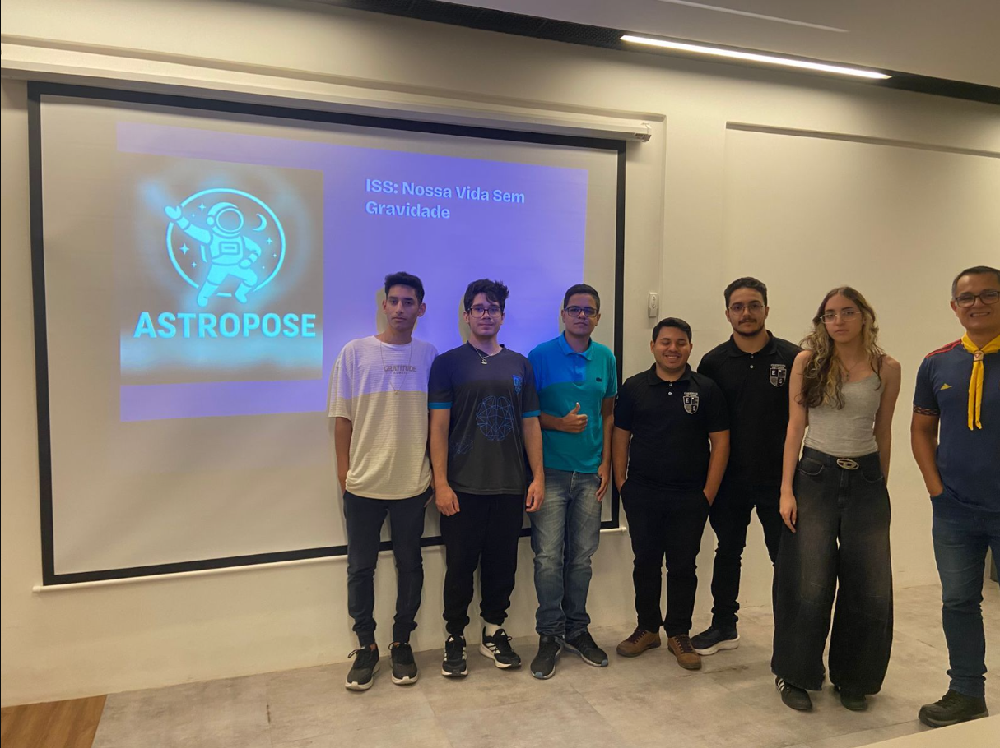
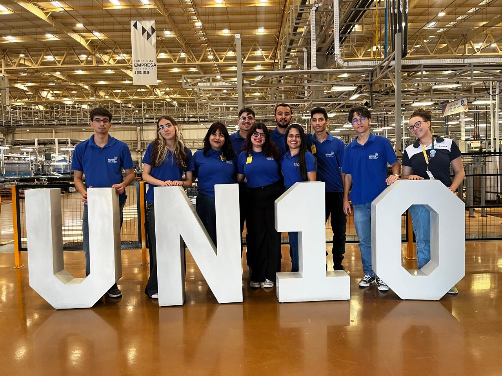
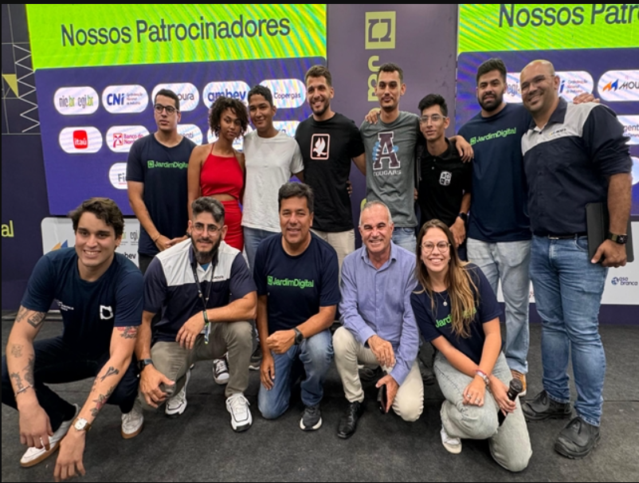
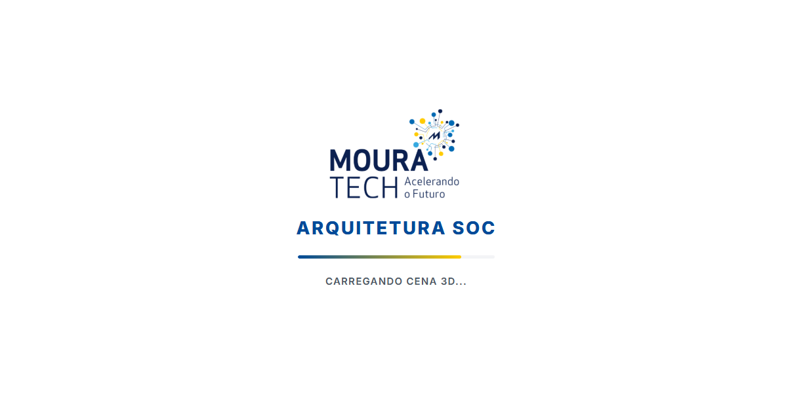

Projetos em Destaque
Os projetos mais relevantes da minha trajetória

Astropose / Top 10 melhores projetos do estado no Hackathon NASA
Projeto que utiliza pose estimation para criar interfaces interativas onde o corpo humano se torna o controle. Combina visão computacional e design de experiência.
Ver detalhes do projeto
Cybersecurity / SOC & Blue Team
Ambiente de monitoramento de segurança usando Wazuh, Suricata e MISP. Focado em detecção de ameaças, análise de logs e resposta a incidentes.
Ver detalhes do projetoOutros Projetos
Projetos menores e trabalhos em desenvolvimento

Hackathon Moura 2024
Projeto vencedor do 1º lugar no Hackathon Moura 2024. Lideramos o desenvolvimento de uma solução inovadora integrando Visão Computacional e IA para resolver desafios reais do setor industrial. Além da implementação técnica, atuei na gestão de projeto, garantindo a entrega de um MVP funcional e de alto impacto sob pressão.
Site de rifa de moto para empresa ASPAN (Freelancer)
Desenvolvimento de uma plataforma completa de rifas online para a ASPAN. Criado em parceria com Vinicius, o sistema foi projetado para gerenciar o sorteio beneficente de uma Honda Biz 125, incluindo integração de pagamentos, banco de dados para gestão de números e um painel administrativo para controle das vendas.

Arquitetura SOC MouraTech
Implementação de ecossistema de segurança ofensiva e defensiva. Através da integração de ferramentas open-source como Wazuh e Suricata, estruturei um fluxo de monitoramento e resposta a incidentes que prioriza a visibilidade total da rede e a mitigação rápida de vulnerabilidades.